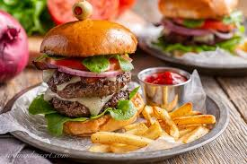
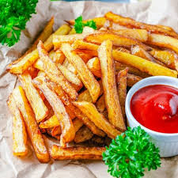

YUMMY FOODS
Welcome To Yummy Foods
Yummy food tastes very good and makes you happy.It can be sweet, salty, spicy, or creamy.Pizza, ice cream, and burgers are yummy for many people.Yummy food smells nice and looks tasty.It is fun to eat and enjoy with family or friends.
|
Awesome Taste |
Awesome Ingredients |
Burgers Collection Bonanza
Burgers are round sandwiches with a meat or veggie patty.They usually have bread, lettuce, tomato, and cheese.Burgers taste juicy, salty, and very yummy.People like to eat them with fries and a drink.They are popular in fast food places and parties.
|
Burger One |
Burger Two |

Burger Three |
Burger Four |
Burgers are one of the most popular fast foods in the world. They are made with a patty (usually meat or vegetables) placed inside a soft round bun. The patty can be grilled, fried, or even baked. People love to add toppings like cheese, lettuce, tomato, onions, and special sauces like ketchup or mayonnaise.
Fire And Ice With Our Fries
Fries are long, thin pieces of potato.They are cooked in hot oil until crispy and golden.Fries taste salty and are fun to eat.People often eat them with ketchup or cheese.They are a popular snack or side with burgers.

Fries One |
Fries Two "> |
Fries Three |

Fries Four |
Fries are thin slices or sticks of potato that are deep-fried until crispy and golden. They are usually served hot and salted. Fries are a favorite side dish with burgers, sandwiches, or eaten alone with dipping sauces like ketchup, mayo, or cheese.
Eat Healthy And Stay Healthy
Healthy food is good for your body and makes you feel strong.It includes fruits, vegetables, whole grains, and lean meats.These foods give you energy and help you stay well.They are not too salty, sugary, or oily.Eating healthy food helps you grow and keeps you active.

Healthy One |

Healthy Two |
Healthy Three |
Healthy Four |
Greens include fresh vegetables, especially leafy ones like lettuce, spinach, or kale. They are often served raw in salads or cooked lightly for side dishes. Salads can include many ingredients like tomatoes, cucumbers, olives, cheese, and dressings.
Do Google and Eat Noodles
Noodles are a soft and tasty food.They are long and thin, like strings.People cook them with vegetables, chicken, or sauce.Noodles can be spicy or mild, hot or cold.Many people around the world love to eat noodles.

Noodle One |

Noodle Two |
Noodle Three |
Noodle Four |
Noodles are long, soft pieces of dough, cooked in boiling water. They can be made from wheat, rice, or eggs. Noodles are used in many dishes around the world, like spaghetti, ramen, lo mein, or pad Thai. They are often mixed with vegetables, sauces, or meats.
Enjoy The Deserts
Desserts are sweet foods we eat after meals.They include cake, ice cream, cookies, and pudding.Desserts taste very yummy and make people happy.Some desserts have fruits, chocolate, or cream.They are often eaten at parties and special times.
|
Desert One |

Desert Two |
Desert Three |
Desert Four |
Desserts are sweet dishes eaten after a meal. They include cakes, ice cream, cookies, pies, and puddings. Some desserts are cold, some are warm, and many have chocolate, fruit, or cream.